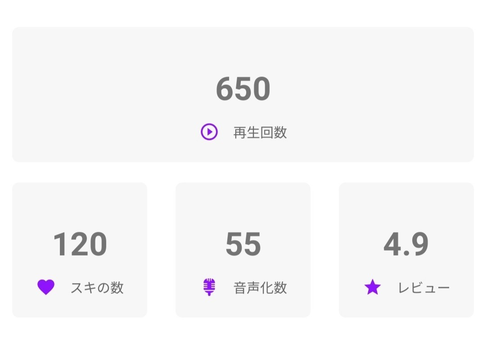

音声小説化サイト・Writone(ライトーン)との出会いは、間違いなく2018年の創作活動で最も大きな衝撃でした。
もしかすると、この記事を読んでくださっている方の中にもお使いの方がいらっしゃるかもしれません。
一応、簡単に説明しますと「作家ユーザーが作品を投稿し、その中から声優ユーザーが音声化したい作品を朗読することで音声小説を作り上げるプラットホーム」がWritoneです。
☆出会い
今年の夏に偶然TwitterでWritoneの記事を見かけたのが、最初の出会いでした。
その時は正直なところ、今まで見たことないサイトだなーくらいしか思っていませんでした。しかし、よくよく調べてみると「小説家になろう」「カクヨム」と連携していることもあり作品を投稿しやすかったため、とりあえず登録してみるかぁ、みたいなノリで使い始めました。
登録から数週間後、ふと思い出したようにWritoneを開いてみると、なんと数名の方が拙作を読んでくださっていたのです！
実際に拝聴してみると、自分の作品が誰かの声となって耳に届く感動があり、未だにその時の記憶は鮮明に残っています。
★独自性・革新性
これまでいくつかの小説投稿サイトを利用してきましたが、サイト内で感想やレビューなどを頂いてきた感動とはまた違い、実際に作品を共に作り上げる感覚は不思議と心強さもありました。
それは、この作品はどんな風に読まれるかな、だとか、これなら色々な読み方がされそう、といったように音声化される先を見据えながら、声優ユーザーに作品を託すことができるからです。
こうした作品作りができるのもWritoneの楽しさでもあり、醍醐味のような気がします。
また、私はあくまで小説投稿側の意見しか申せませんが、Writoneは小説投稿者にとって革命的なプラットホームだと感じています。
声が加わることによって作品にある感情や雰囲気が具現化され、新たな形となって受け手に伝わる。そして、私たちが書いた作品に立ち戻ることで新たな発見があるかもしれない。
それに"朗読を聴く"という行為自体が、とても心地のよい時間である点も特記すべき点です。
幼い頃に母親に絵本を読んでもらった時の感覚と同じで、いわば癒しの効果も期待できるのです…！
☆現在
現在Writoneに投稿された小説数は約600作、ユーザー数も500名超となっているようです。
また、一部の声優学校ではカリキュラムの中にWritoneを使うことが決まっているみたいです！(すごい！)
そうした、今注目のサイトで活動させていただいている私も、おかげさまでおすすめライターに選んでいただき、現在は55作にも及ぶ音声化小説が生まれました。
本当にありがたく、嬉しい思いでいっぱいです。

※進藤 海のおすすめ音声化小説はコチラから↓
https://note.com/embed/notes/n26cfc79cdaec
★最後に
聴覚と視覚、どちらからでも楽しめる小説サイト・Writone。
現在はイベント期間真っ只中で、今後もこうした催し物にも積極的に参加したいなと思っています！
https://note.com/embed/notes/n8f1c9c2c180c
これからも更にWritoneの輪が広がることを願っています！
そして、私自身も少しでもお力になれるようWritoneをもっともっと活用していきたいと思います！
最後に、読んでくださっているか分かりませんが、Writoneをご利用している皆様へ！